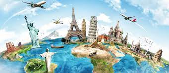
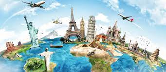

Welcome! In this page I talk about things I plan to do in the future. These are goals that I would like to reach in order to be able to state that I have accomplished things that I truly desire. Some of my plans in the future that I talked about in this page are working in my ideal industy, traveling, and enjoying life. This page contains things am hoping to in the near future.
My future plans
Considering what the future may bring might help us select what path to pursue in the present. Several research have looked at how our decision-making is influenced by our thoughts about the future. Thinking of the future right now in a very young age is quite beneficial because it provides a sense of goal and events, I am able to expect in the future. Imagining the future is can be very wide because everything is possible and there are endless possibilities that can happen. My ideal future is me working in my ideal industry, being able to travel the world, and enjoy my twenties and thirties while I still have the energy.
My first goal in the future is to be able to graduate college and work in the IT field. My plan is to become a developer for any IT company but my preference is to work for a gaming company like Riot games. However, being hired in a company like Riot games is going to require a lot of experience and professionalism which is a great set goal for me to have and work for. Being an IT developer is my main goal because I would like to work with a team to develop applications, system, website and machine behaviors. Originally what interests me in coding is from my subject in high school named robotics where we had to program behaviors of Lego built robots to do tasks and use their various sensors. Never the less, if ever I am not able to accomplish being a developer I my backup is to work on a field where I manage data in a computer systems like databases.
 


My other goal is to be able to travel the world in the future specifically the south east Asian countries. I plan to travel south east Asian counties first because most of the counties are cheap to travel and it has the most unique cultures. These countries also have the best types of people because of the different backgrounds the people have from different cultures and practices. I also think that these countries will have unique sights to see from tourist spots and food to eat. Food in south east Asian counties is also unique with different tastes and influence. The only problem in traveling in these countries is the language barrier because most of these counties are non-English speaking. I also plan to go to America because it is the best county with a lot of opportunities for my planned career path. It is also the country where a lot of people plan to go to because it is famous and a rich country to live in and explore.


Lastly, in the future I also plan to just enjoy life take what ever comes to my life. Where I will be able to use my time, money and energy to experience life as I explore and grow up. I wish to experience a lot of activities while I’m still young in my twenties and early thirties and enjoy it. Activities such as mountain climbing, doing sports, traveling, and getting engaged in producing music, art or films. I am willing to invest a lot of my money just to enjoy what ever opportunities that comes. I am also willing to use a lot of my time for myself, friends and family. At some point I am also going to decide to settle down by getting a home and building my own family.